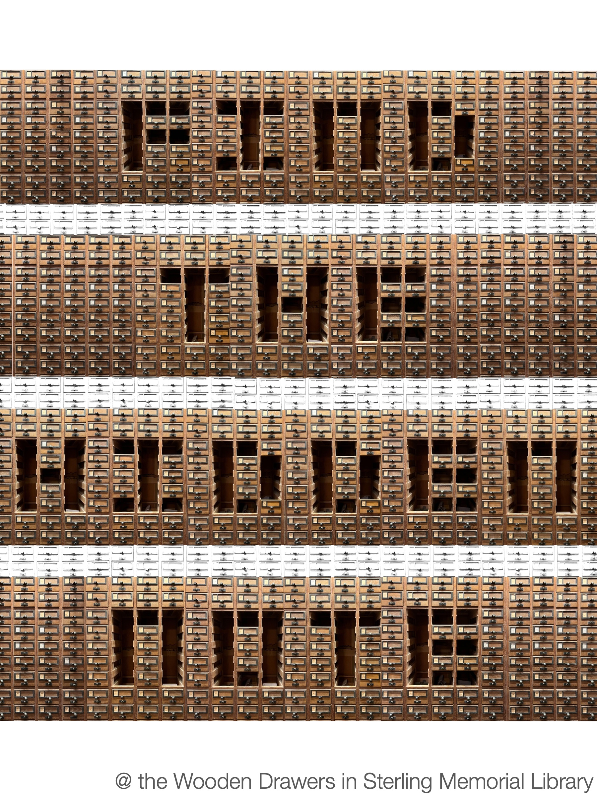
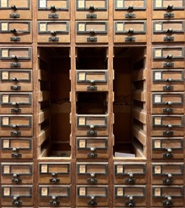
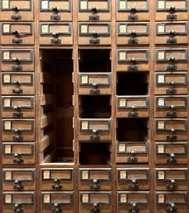
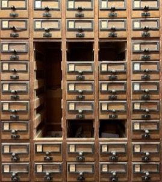
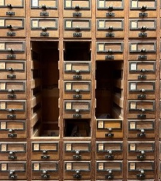
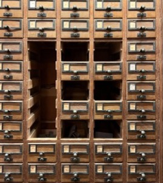

Poster: Library Drawers
2026
Final project for the course Introduction to Graphic Design, taught by Henk Van Assen at Yale School of Art
The task was to design a medium-specific alphabet made from an object or physical material. I chose to repurpose the wooden drawers of Sterling Memorial Library, Yale’s main library and the place where I spent most of my undergraduate years studying, reading and writing papers. The drawers were historically used for cataloguing, but with the development of digital media and library software they have become obsolete, peeked into only by tourists or curious students. My intention was to revitalize the drawers by using them as a medium to create meaning.

Letters




